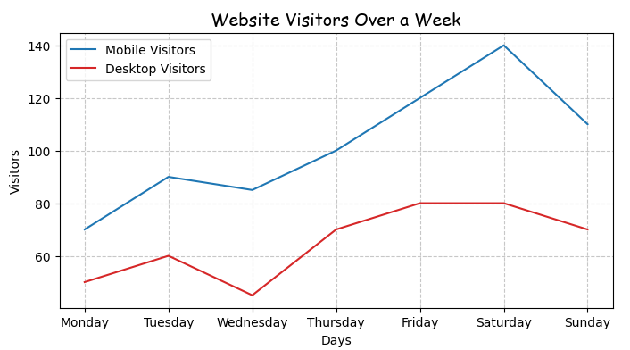

Customize Matplotlib Graphs in Python: Add Title, Labels, Grid & Fonts
Making a graph is cool and all — but making it *look good*? That’s a whole other level. Whether you're showing off a data project or just want your charts to make sense at first glance, customizing your Matplotlib graphs is key. In this tutorial, we’ll show you how to glow up your plots by adding titles, labeling your axes, turning on gridlines (so your data isn’t just floating in space), and styling everything with custom fonts. It’s all about turning basic into polished — and trust, your graphs will be serving pro vibes in no time.
Why Use Customization?
A basic graph shows the data, but a customized one makes it *make sense*. With Matplotlib, adding titles, labels, gridlines, and font styling helps your plot look clean, clear, and actually readable. Customization isn’t just about looks — it’s about making your data speak.
Step-by-Step Code Example
import matplotlib.pyplot as plt
# Days of the week
days = ['Monday', 'Tuesday', 'Wednesday', 'Thursday', 'Friday', 'Saturday', 'Sunday']
mobile_visitors = [70, 90, 85, 100, 120, 140, 110]
desktop_visitors = [50, 60, 45, 70, 80, 80, 70]
plt.figure(figsize = (8, 4))
plt.plot(days, mobile_visitors, marker="o")
plt.plot(days, desktop_visitors, marker="o")
plt.show()
1. First up, let’s add a title to the graph.
plt.title("Website Visitors Over a Week", fontdict={'fontsize': 14, 'family': 'Comic Sans MS'})
Quick tip: fontdict lets you style your text in Matplotlib — you can change the font size, font family (like 'Comic Sans MS'), and more. It helps make your titles and labels look just the way you want.
2. Next, let’s label the axes so everyone knows what each part of the graph represents — the days on the bottom and visitors on the side.
plt.xlabel("Days")
plt.ylabel("Visitors")
3. To make the graph easier to read and way more attractive, let’s add gridlines — they help your eyes follow the data points like a pro.
plt.grid(True, aplha = 0.7, linestyle="--")
Quick tip: alpha controls the transparency of the gridlines (0 is invisible, 1 is solid), and linestyle="--" makes the gridlines dashed instead of solid.
4. Finally, let’s add labels directly on the lines to clearly show what each data set represents — making your graph super easy to understand at a glance.
plt.plot(days, mobile_visitors, label="Mobile Visitors")
plt.plot(days, desktop_visitors, label="Desktop Visitors", color = "tab:red") #you can also change the color of the line
plt.legend()
Quick tip: Don’t forget to add plt.legend() — it’s what actually makes the labels show up on the graph. Without it, your lines will have names but no one will ever see them!
And here’s what the graph looks like

Ommo, this looks so cool!
More educational content :